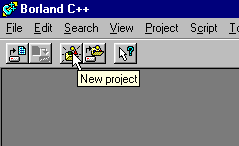
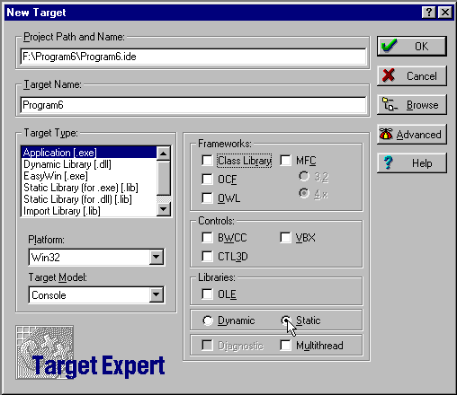
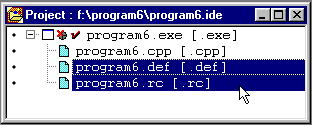
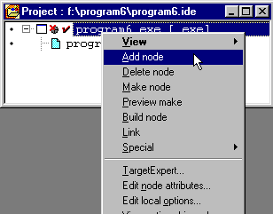
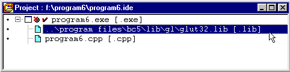
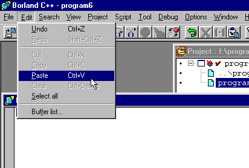

introduction
The following page shows you how to create a project from within the
Borland C++ development environment. Once the project has been created you
can compile it into an executable. After you've downloaded an example, unzip it to its own
directory. Run the executable and watch the program at work. You might have to
copy "glut32.dll" into the directory. Alternatively you could copy the
glut dll into your WINDOWS/SYSTEM directory.
Open the "program.cpp" file by double clicking
on it. Use "Select All" from the edit menu and then
"Copy" the contents of the file to memory.  Select
"new project" from the speedbar. Doing so will open the target
expert

The "Target Expert" will open, change the default settings to the ones shown above
|
 |
|
|
 |
|
 |
|
|
 |
After the project compiles to run it you MUST make sure that glut32.dll is in the current path. You do this either by having it in the same directory as the executable or in your WINDOWS/SYSTEM directory.
Happy experimenting!
Website and content, Paul Groves